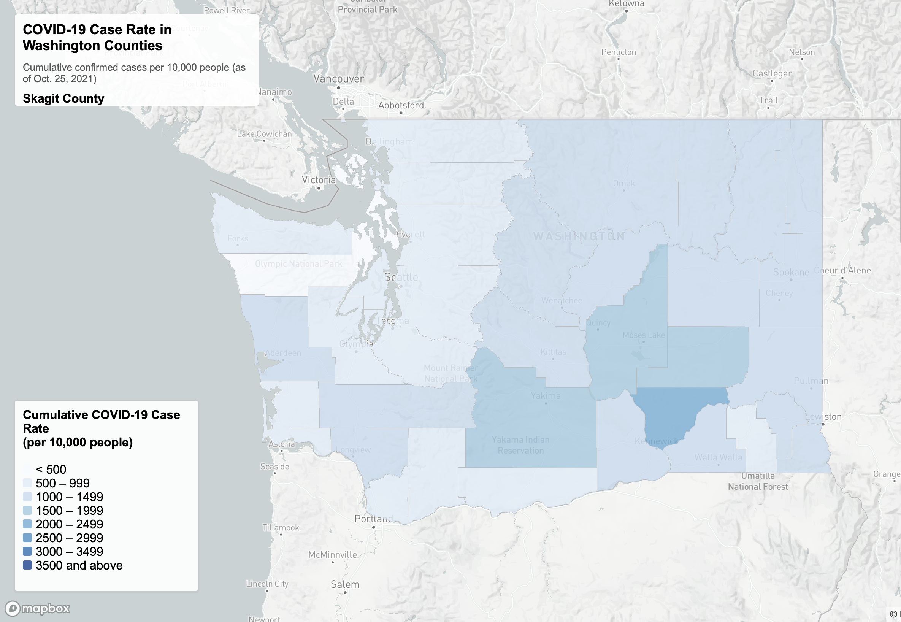
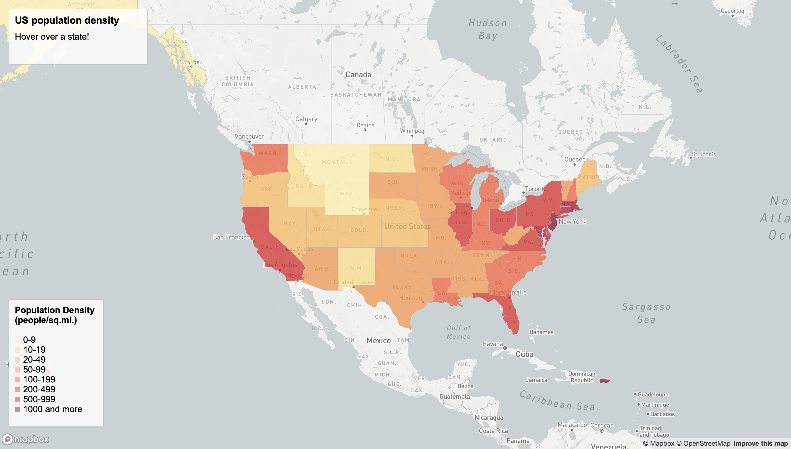
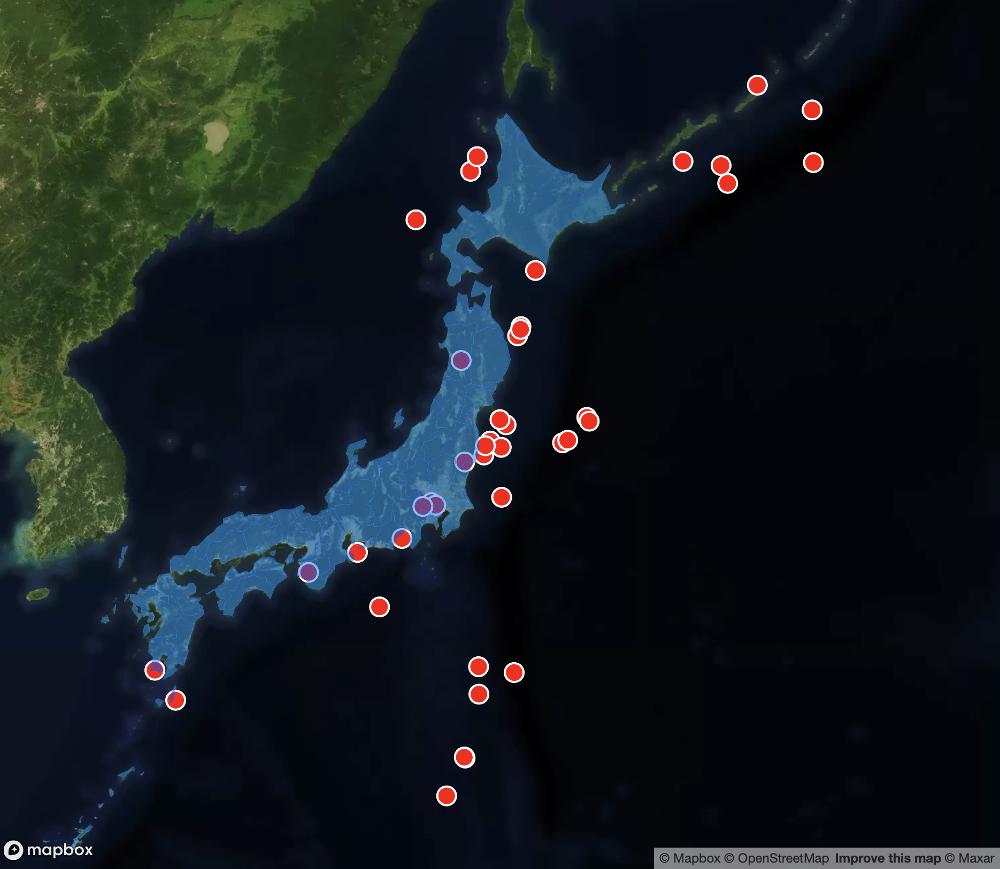
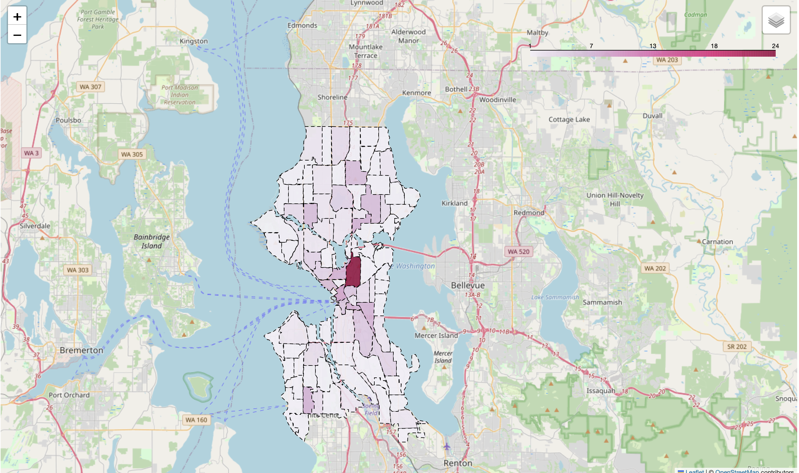
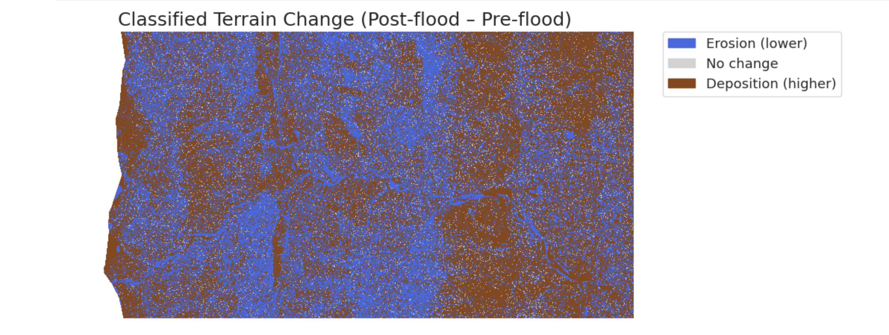

Interactive Data Visualizations
Browser-based visualizations built with real-world data, interactive design, and modern web technologies

EV Charging Infrastructure Mapping
Interactive visualization exploring electric vehicle charging infrastructure to assess availability, distribution, and access using real-world location data.

COVID-19 Metrics by County — Washington State
Examines county-level COVID-19 trends across Washington State, highlighting patterns in cases, deaths, and vaccination rates using public health data.

Population Density — United States
Compares population density across U.S. states, designed to support quick regional comparison and pattern recognition.

Recent Earthquake Activity
Presents earthquake event data to support exploration of regional patterns, frequency, and relative magnitude across a geographic area.
Analytical Notebooks & Dashboards
Jupyter-based analyses showcasing data exploration, visualization, and interactive tools

Seattle Crime Dashboard
Analyzes Seattle crime data through interactive filtering and visualization, combining API-sourced data with temporal processing and location-based analysis.

Lidar Terrain Analysis — Colorado Flood Study
Demonstrates raster data processing workflows in Python, including handling elevation models, managing no-data values, applying spatial masks, and visualizing lidar-derived terrain data.